[RTL8722CSM][RTL8722DM] Access IFTTT Via Ameba¶
Introduction to IFTTT
IFTTT, known as If This Then That, is a website and mobile app and free web-based service to create the applets, or the chains of simple conditional statements. The applet is triggered by changes that occur within other web services such as Gmail, Facebook, Telegram, Instagram, Pinterest etc.
Preparation
Ameba x 1
- An account from https://ifttt.com/ , in order to access IFTTT
service*

*Note: Upon log in, there are several cloud and online services that are integrated with IFTTT platforms.
Example
Generate Applet from IFTTT
In next, we obtain an example of IFTTT Applet to send email to specified recipient.
To run the example, HTTP POST feature of the ameba is used to post a simple webhook service that is received by IFTTT Platform and in turn be used to trigger a response (sending an email).
After logging in https://ifttt.com/, click My Applets from Top
{kind=link}
Click “New Applet” on the Applet page.
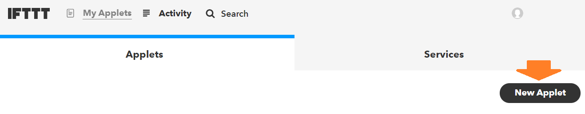{kind=link}
Click +this as indicated below to add the trigger
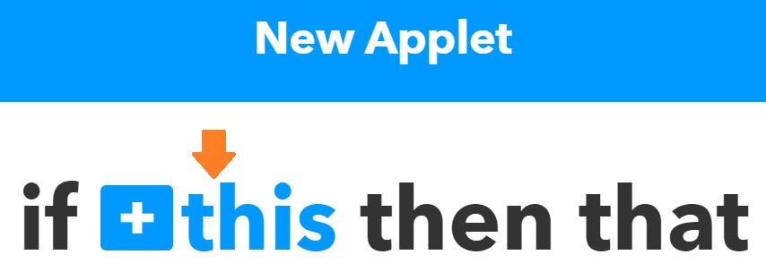{kind=link}
Choose “Webhooks” service as shown below. Alternatively, search the service under Choose a Service

Then, the available triggers will appear under service. So far, only one Trigger, Receive a web request, is under Webhooks.
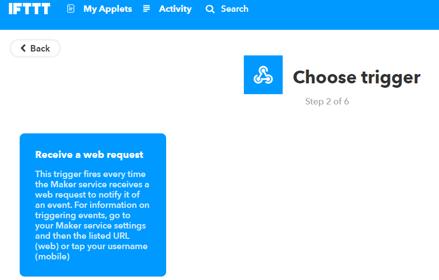{kind=link}
Once Receive a web request is selected, an event name is required to identify the trigger successfully. In this example, set Event name as “test_event”
Next, select +That field to create the action service taken in response to the last trigger. In this example, choose **Email **as the action service
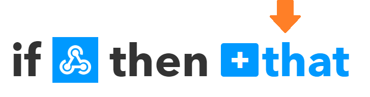 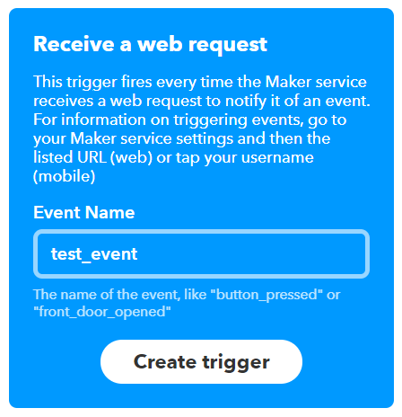 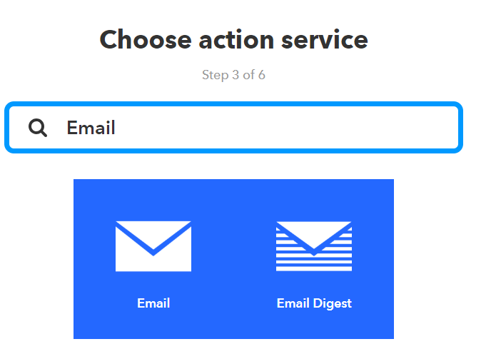{kind=link}
{kind=link}
{kind=link}
A list of Actions can be available under Action Service. In this example, only Send me an Email is found. Click on Send me an Email
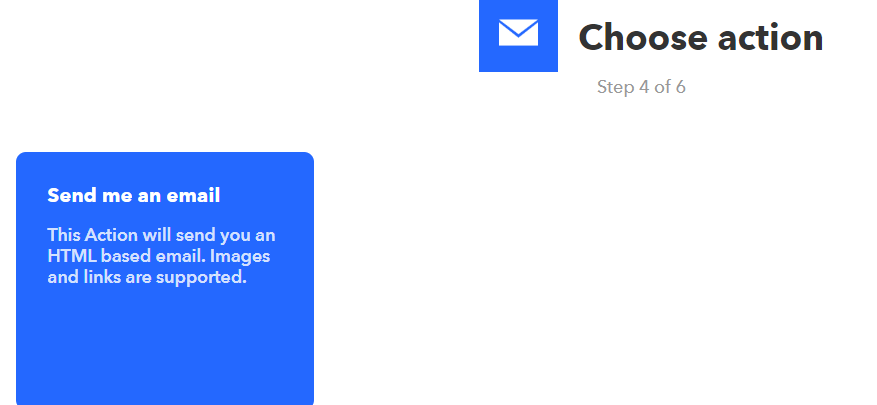{kind=link}
Under the template of Send me an Email, the contents os the email, such as subject and body, is editable. Click Create Action to complete action. Note that **Email **service is offered to the email ID registered under IFTTT account.
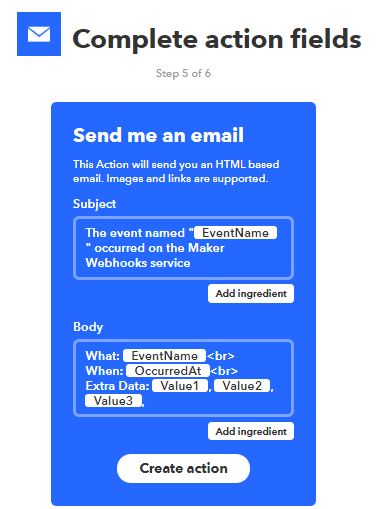{kind=link}
After Review Click on Finish **to complete and create the Applet. The applet is then found under **My Applet in own IFTTT oage
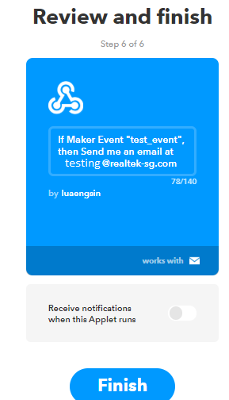{kind=link}
Post the Trigger via Ameba
Once the Applet is ready in the IFTTT dashboard, the example program can be flashed onto Ameba board to post HTTP request.
1. The example program is under the folder “HTTP_IFTTT_POST”. Follow the steps below:
1) Open the example code in “File” -> “Examples” -> “AmebaWiFi” -> “HTTP_IFTTT_Post”
2) Once the example is opened, edit the following 3 items inside the code to make the program work.
Edit the wi-fi credentials to connect to the wi-fi hotspot or access point of desirable choice.
Edit the wi-fi credentials to connect to the wi-fi access point of choice.
Under the host name field, enter the hostname of the IFTTT service “maker.ifttt.com”
under the Path field, enter the EventName and key field “trigger//with/key/”
− Event name: The event name should be same as the one specified in the IFTTT applet. In this example, the event name is “test_event”
− Key: available under Webhook service in individual IFTTT account. See next step to obtain.
How To obtain a key from documentation tab of the Webhooks?
find the Webhooks service in the Services tab.
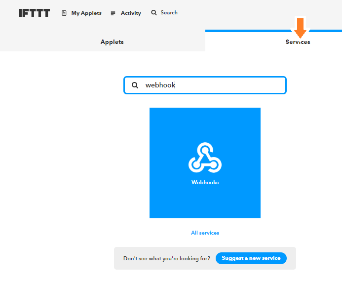 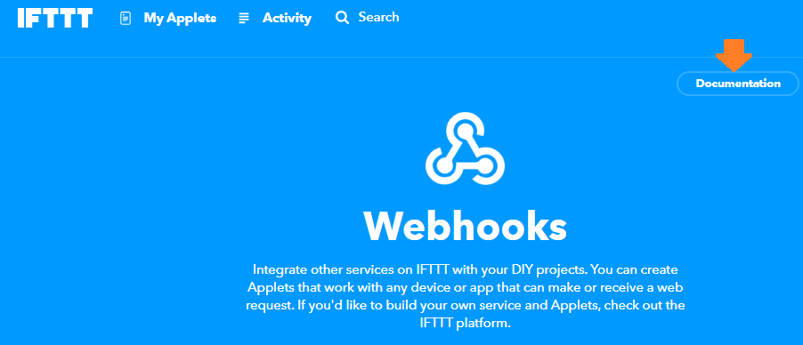{kind=link}
{kind=link}
On Webhooks service page, click on the Documentation tab on the top right corner.
The key can found in the documentation page. Also, how HTTP request can be used as shown


Once the example is ready, connect to Ameba board via USB Cable.
{kind=link}
{kind=link}
Thereafter an email is sent to recipient email account registered at IFTTT Applet and email notification will be received.